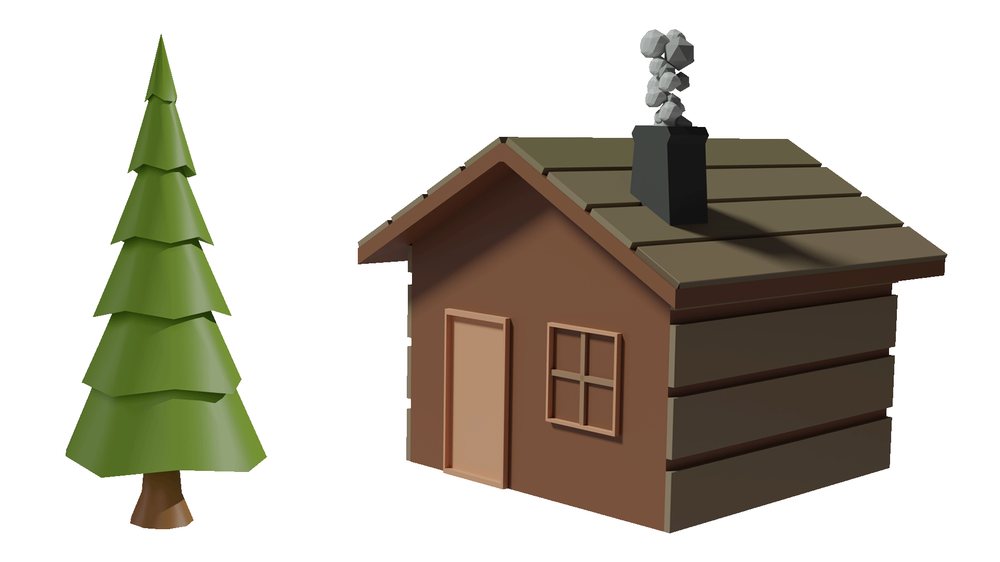
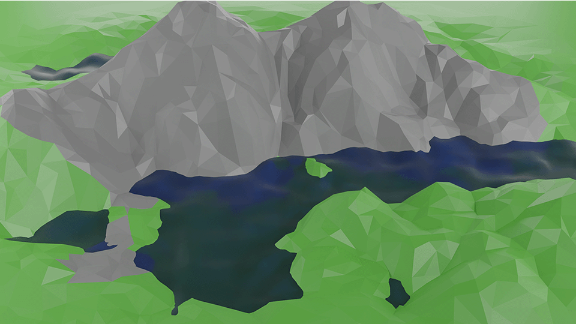
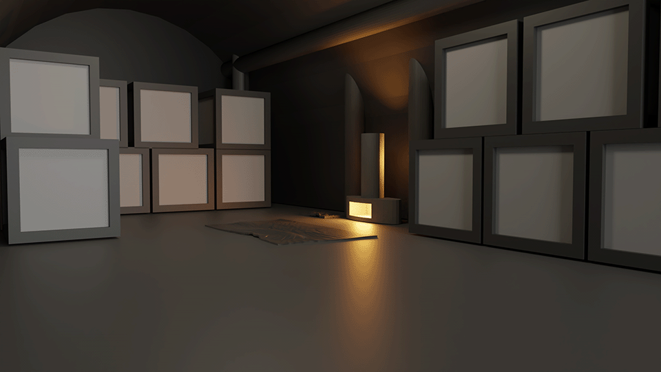

Création 3D
Petite réalisations 3D




Quelquels modélisations 3D que j'ai pu réaliser sur le logiciel blender. Vous pouvez retrouver : un challet et sont arbre, une montagne et une soute de bateau réaliser pour un projet de cours.